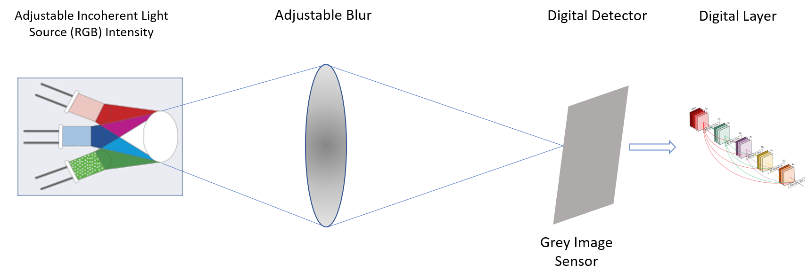

| Paper PDF |

|
This project investigates optimal blurring and optimal incoherent illumination patterns, to correctly classify leukocytes. We simulate the physical layer, assuming a perfect incoherent light source, whose intensity is adjustable, for each color channel. Similarly we jointly learn an optimal blur, while training a Convolution Neural Network (CNN) to perform the classification task. Before entering the digital layer, the image is downsampled and converted to grayscale. A sensitivity analysis is performed varying the downsampling factor from 2 to 6 and is compared with a network fed with non-optimized physical layer, but without downsampling. Results show that physical layer optimization is able to completely offset a downsample factor of order of 3 and, even for lower resolution, is still capable to provide a reasonable performance.. |
|
|
| Paper: |
| Code and Data: |